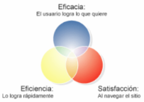
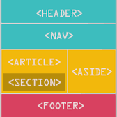

¿Qué es el Internet?
Internet es una red mundial formada por millones de computadoras de todo tipo y plataforma, conectadas entre sí por diversos medios y equipos de comunicación que mediante una serie de protocolos (TCP/IP) hacen posible que los usuarios podamos localizar, seleccionar e intercambiar información.
¿Qué son los proveedores de Internet?
Son empresas dedicadas a conectar a Internet a los usuarios, o las distintas redes que tengan, y a dar el mantenimiento necesario para que el acceso funcione correctamente. También ofrecen servicios relacionados, como alojamiento web o registro de dominios, entre otros.
¿Tipos de proveedores de Internet?
Entre los principales tipos de proveedores de Internet existen dos tipos, los cuales son los siguientes:
- ISP: Internet Service Provider
- IPP: Internet Presence Provider
¿Qué es la experiencia de usuario?
 Se refiere a un conjunto de factores relativos a la interacción del usuario con un entorno o un dispositivo en concreto, cuyo resultado es la generación de una percepción positiva o negativa de dicho servicio.
¿Qué es la interfaz de usuario?
La interfaz de usuario es el medio con el que el usuario puede comunicarse con una máquina, equipo, computadora o dispositivo, y comprende todos los puntos de contacto entre el usuario y el equipo (botones, imágenes, enlaces, menú, etc.).
¿Qué son los protocolos de Internet?
Son un conjunto de reglas que permiten que dos o más entidades de un sistema se comuniquen entre sí para transmitir información.
¿Qué es HTML?

HTML (HyperText Markup Language) es el lenguaje de marcado estándar utilizado para crear y estructurar el contenido de páginas web. Es el lenguaje base de la World Wide Web y se utiliza para describir la estructura y presentación de la información en un documento web. HTML utiliza etiquetas y elementos para marcar diferentes partes del contenido, como encabezados, párrafos, imágenes, enlaces, listas y mucho más. Estas etiquetas permiten que el navegador interprete y muestre correctamente el contenido de la página web al usuario.
¿Qué es la semántica en HTML?
 La semántica en HTML se refiere a la forma en que se utilizan las etiquetas y elementos de HTML para proporcionar significado y estructura al contenido de una página web. En lugar de simplemente utilizar etiquetas con fines de estilo visual, la semántica en HTML busca darle sentido al contenido y facilitar su comprensión tanto para los humanos como para los motores de búsqueda.